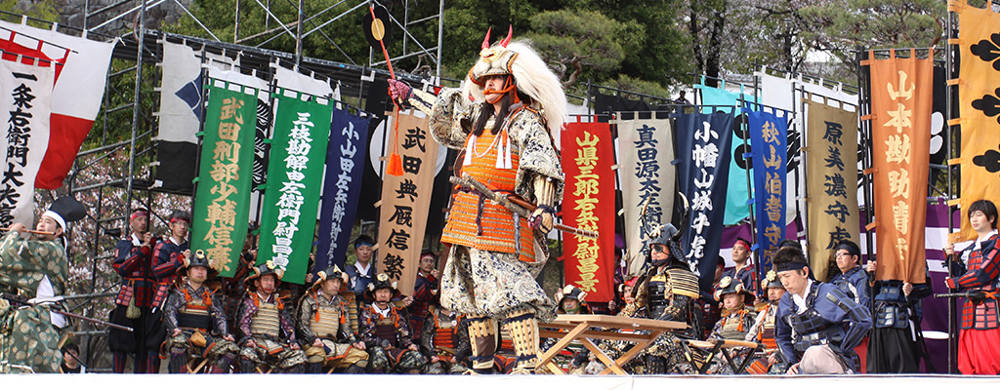
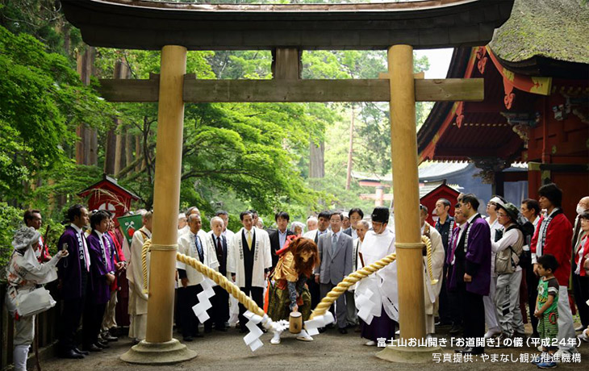
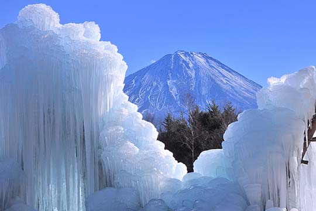

イベント

‐信玄公祭り‐
毎年4月12日(武田信玄の命日)付近に三日間かけて行われているイベントです。
武田二十四将を模した時代行列で、その数約千人にも及ぶ軍勢の行軍を見れます。
その迫力は正に戦国時代にタイムスリップしたかのようです。

‐富士山開山祭‐
毎年7月1日に開催されている富士山のお山開きです。
吉田口登山道の入口である北口本宮冨士浅間神社が行っており、多くの人の無事を祈ります。

‐西湖樹氷まつり‐
1月下旬から2月中旬に行われるお祭りです。
西湖野鳥の森公園で行われるこのお祭りは高さ10ｍにも及ぶライトアップされた
樹氷を見ることが出来るお祭りです。
公園内では沢山の屋台がありますので、是非屋台と一緒に幻想的な風景を楽しんでください。
PAGE TOP